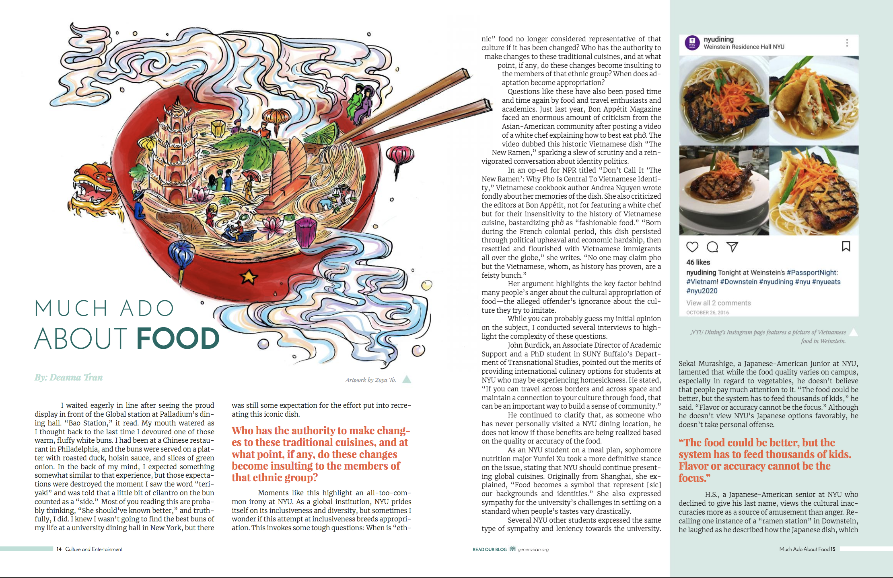
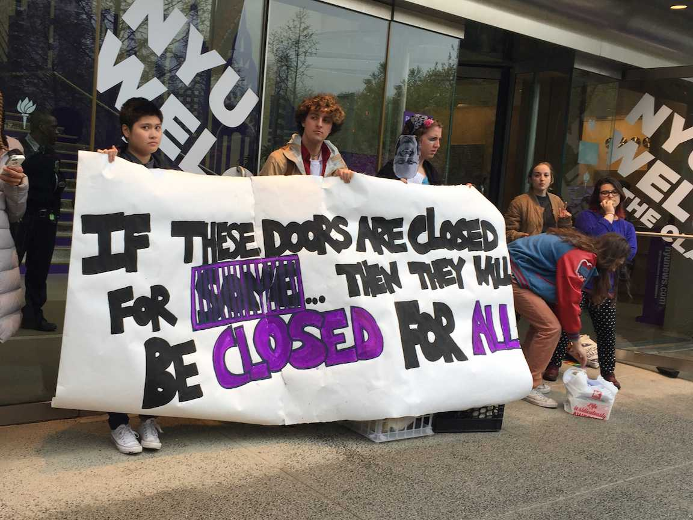
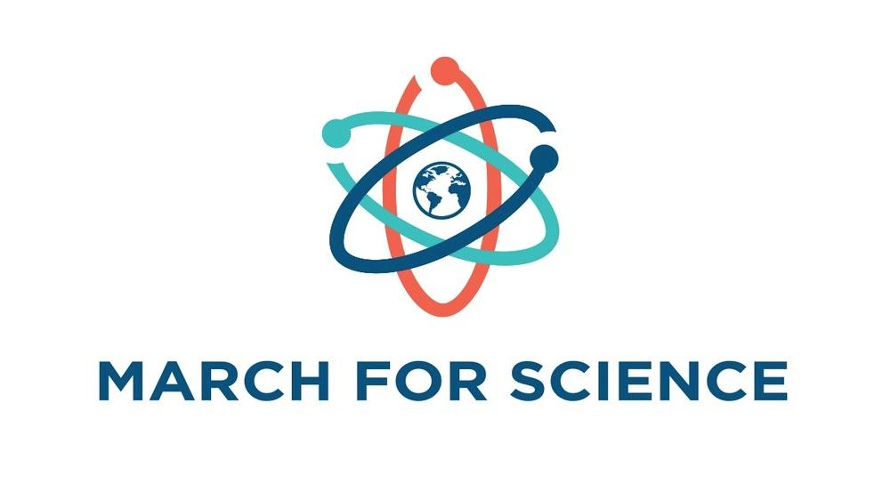
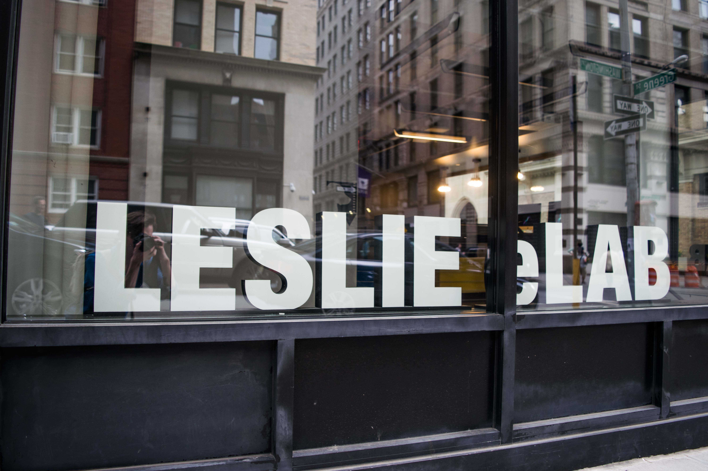
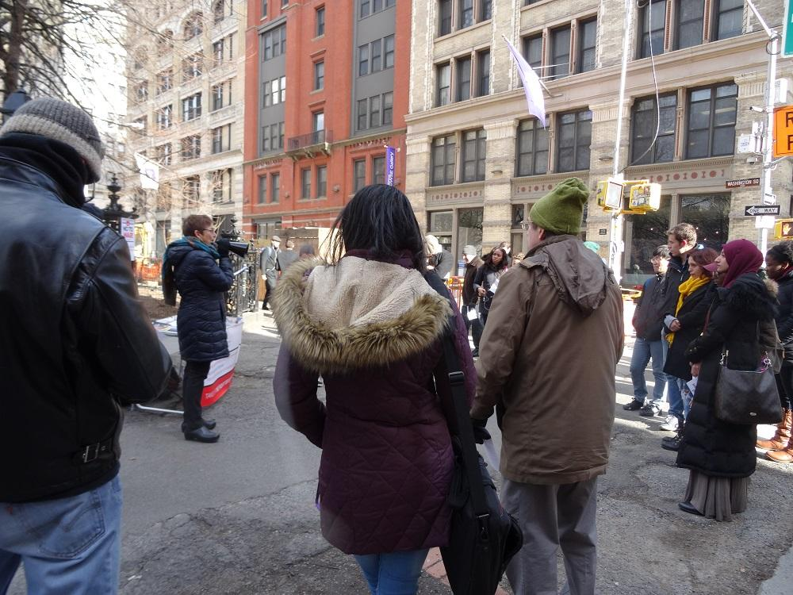
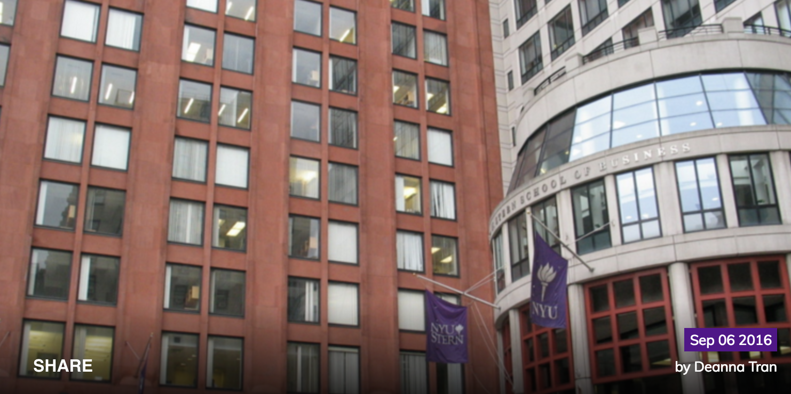
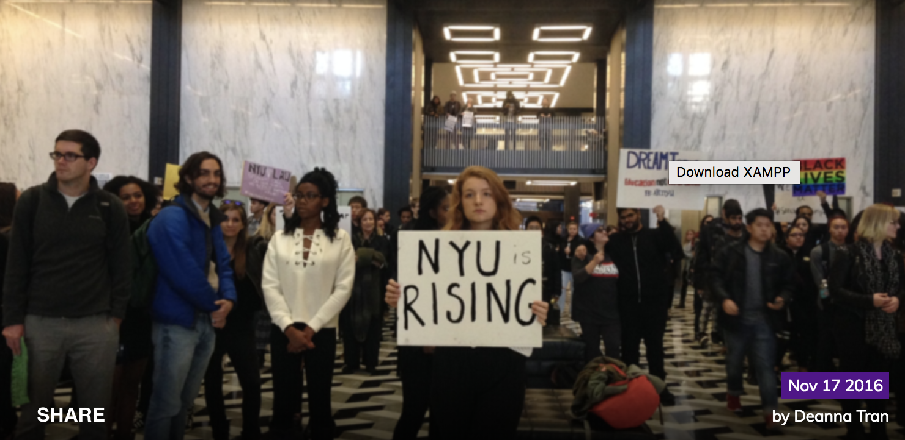
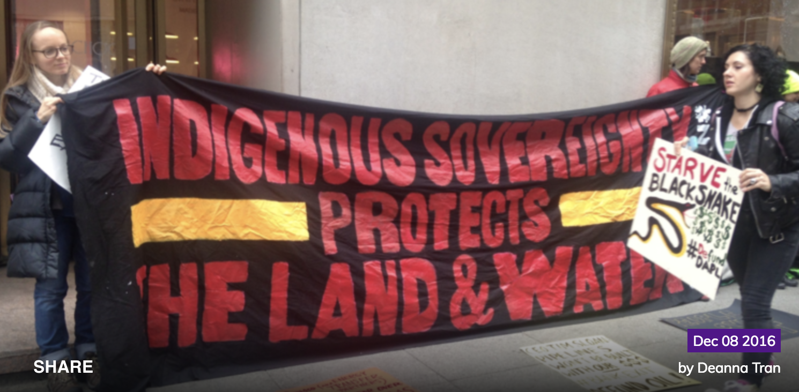

Generasian Magazine
Washington Square News

IEC Continues Fight to #AbolishTheBox
The Incarceration to Education Coalition at NYU protested outside the Kimmel Center for University Life NYU’s Weekend on the Square to further push the university to #AbolishTheBox. The Abolish the Box movement aims to remove...

President Hamilton Announced Attendance at March for Science
President Andrew Hamilton will be marching alongside NYU faculty and students at the March for Science in Washington D.C. this Saturday, according to an email sent out to the NYU community. The March for Science...

Gallatin Sophomores Create Up2Code
A nationwide surge in entrepreneurialism has swept across NYU’s campus, and two Gallatin sophomores in Gallatin, Willy Wheeler and Dan Cleary, have been successful in these ventures with their startup, Up2Code. Wheeler said that last year...

IYSSE Appeals Against their Club Status Rejection
The Student Activities Board was militant last fall as it rejected an application for club status from the International Youth and Students for Social Equality — a socialist group on campus with strong opinions...
FreshU NYU

Exploring Stereotypes: Stern School of Business
Our last installment on Fresh U NYU in this series was “Exploring Stereotypes: Tandon School of Engineering,” which was written last year by our Senior Editor-in-Chief, Dennis Williams, who is a Tandon student himself. Since I’m in CAS, I went to four Sternies to give them the chance to react to the stereotypes written about them on Unigo.

#SanctuaryCampus: NYU Protests Trump's Immigration Policies
Inspired by Movimiento Cosecha's #SanctuaryCampus Campaign, this Wednesday, students and professors at NYU staged a massive walk-out in support of anyone who felt unsafe in light of the recent election.

DAPL Protests In NYC: A Re-Route Doesn't End the Problem
On Tuesday, December 6th, dozens of protesters gathered outside 301 Park Avenue against the rerouting of the Dakota Access Pipeline for the first day of a two-day rally. The location of the protest was chosen to coincide with the 15th Annual "Wells Fargo Pipeline, MLP, and Utility Symposium," hosted in Waldorf Astoria New York.